Day 8｜鏡面湖景、奧斯本公牛與冰啤酒—Logroño → Nájera
2026 年 5 月 28 日 · Logroño → Nájera · 29km
從 Logroño 出發前往 Nájera。為了避開中午的烈日，我們再次選擇摸黑上路。提早出發，就是高溫下徒步的最佳策略。
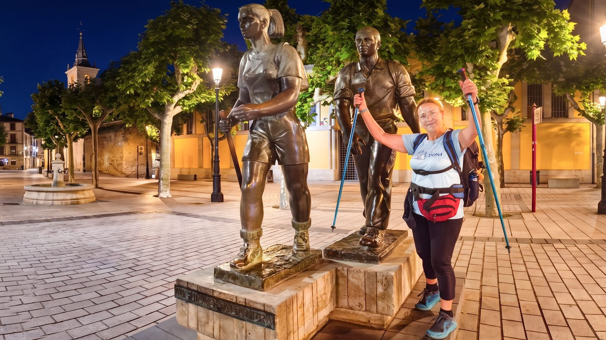
晚了幾分鐘出發，夥伴們已經走遠。剛好遇上義大利大姊「費姊」。我直接當起嚮導，帶著她穿過迷宮般的市區，成功找回主線。作為回報，她給了我一包貼著 Buen Camino 的糖果。
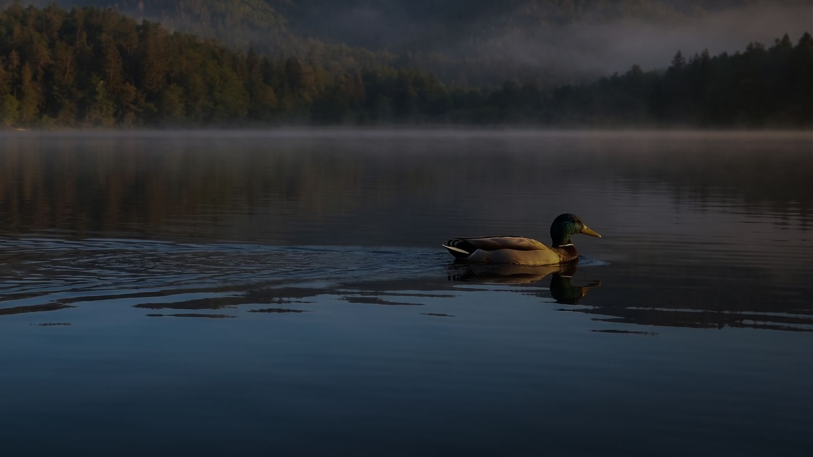
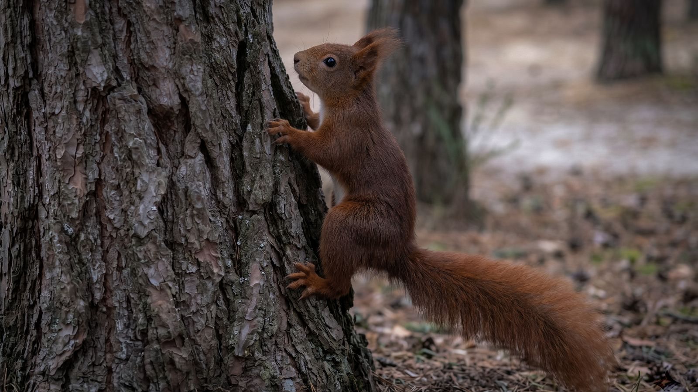
離開迷宮般的市區，我們途經公園湖畔。無人機直接升空，捕捉清晨的平靜湖景。宛如鏡面，平靜療癒。
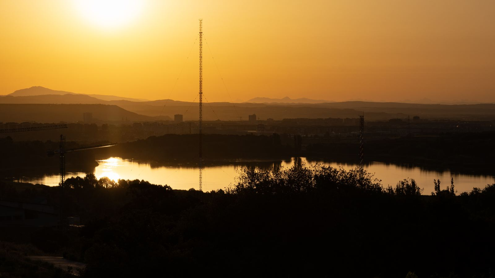
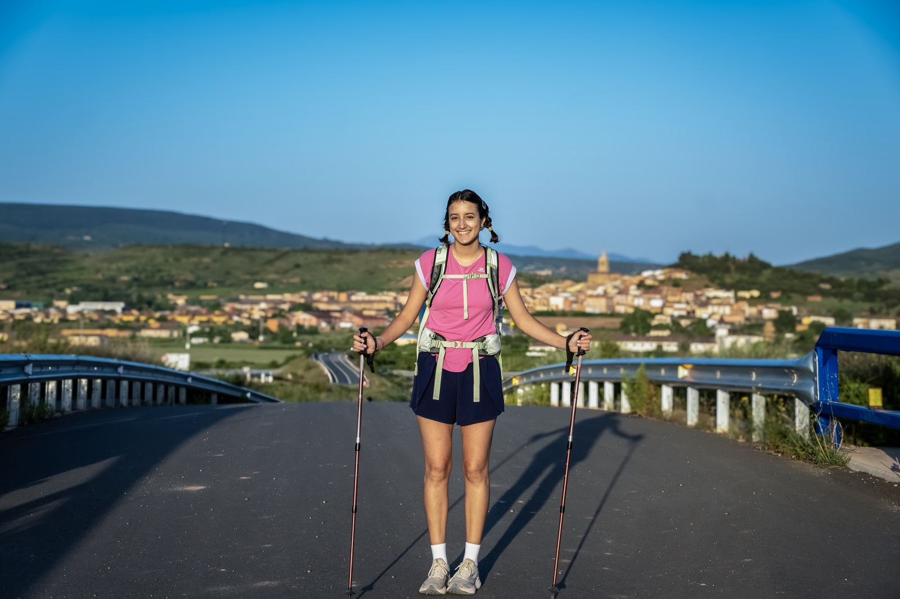
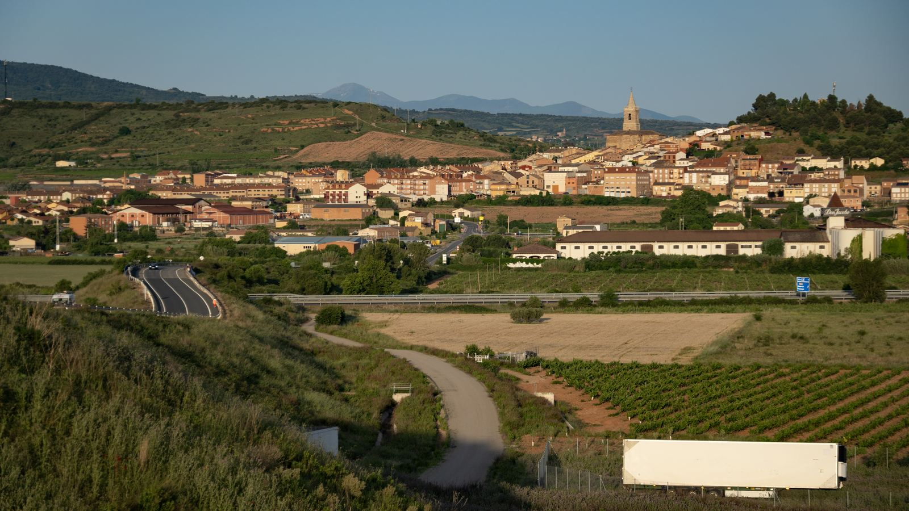
路上巧遇一隻松鼠。順手捕捉畫面，仔細一看，這長相根本是皮卡丘。相當可愛。
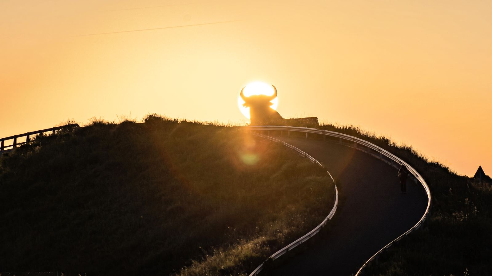
路上與英國妹妹結伴，語言不通？手機翻譯直接上。她高中剛畢業，用一年的時間先看世界，再回學校。這就是年輕探索世界的浪漫。
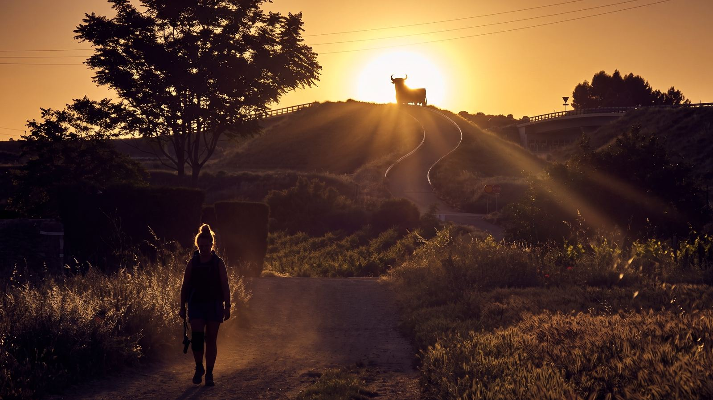
朝聖路上的經典景象。沿途的圍欄上，隨處可見用樹枝排列而成的十字架。這是無數過往朝聖者留下的專屬印記。
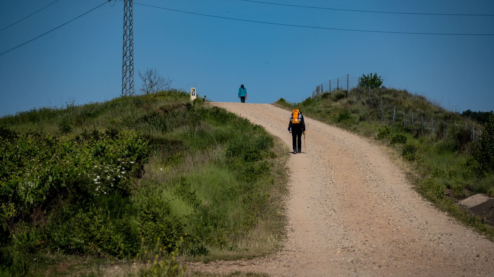
攻頂 Alto de la Grajera，解鎖經典地標：奧斯本公牛。
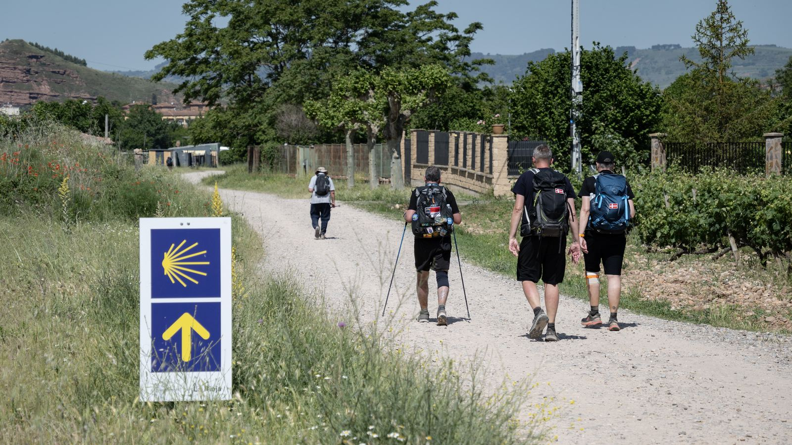
上午烈日無情曝曬，沿途幾乎沒有補給點。在水分完全耗盡之際，路邊出現了自由捐贈的冰箱。直接拿出一瓶冰啤酒一飲而盡，狀態瞬間滿血復活。
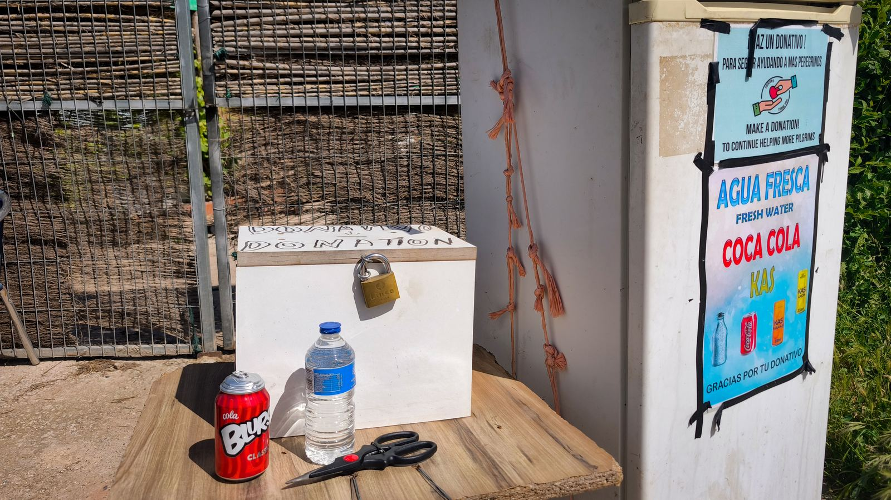
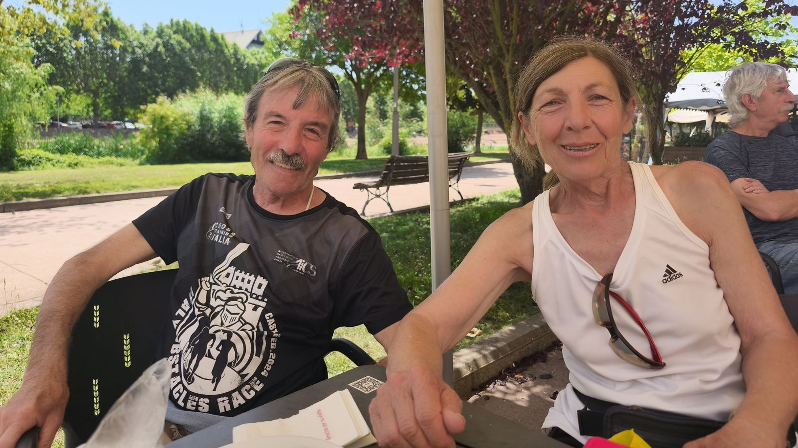
抵達清澈溪流小鎮。庇護所門口已排滿長長的背包陣，這是朝聖路標準的床位卡位戰。放下裝備代排，趁著等待入住的空檔，直接到小溪泡腳徹底降溫。冰水急救，瞬間舒緩徒步的疲勞。
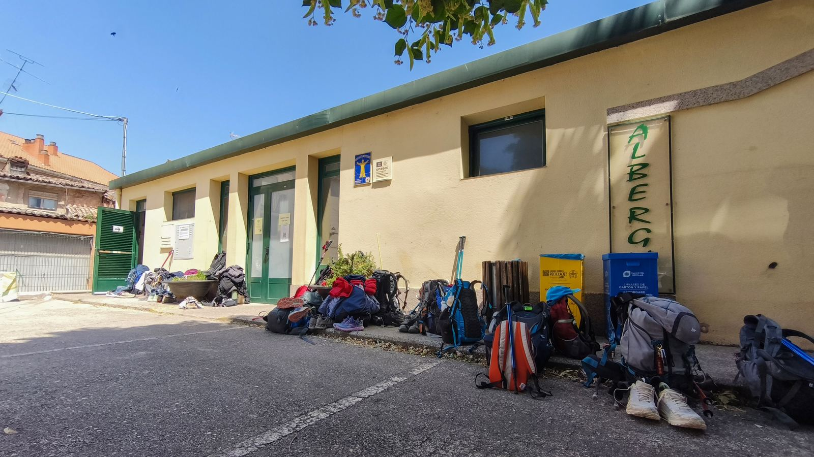
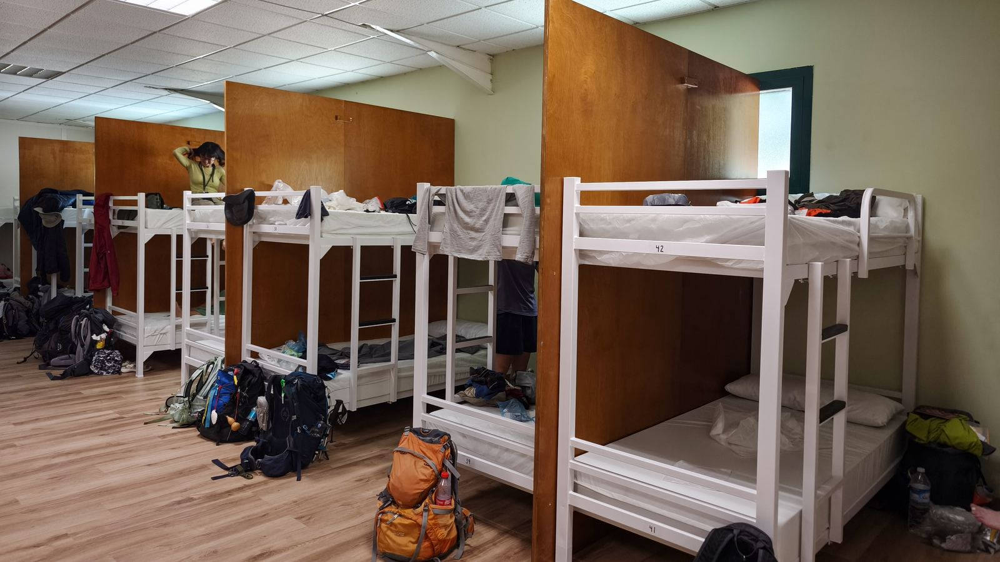
超商採買食材，又是美味一餐。特別提一下，西班牙日照長，水果超甜又便宜必買。旁邊小哥彈著吉他，身邊有好友相聚。幾杯啤酒與紅酒下肚，疲勞全消。這就是朝聖路上最舒服的夜晚。
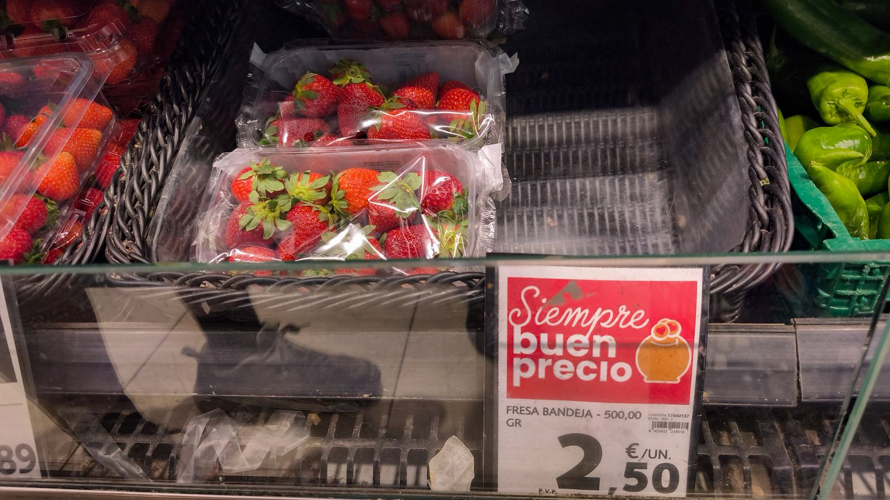
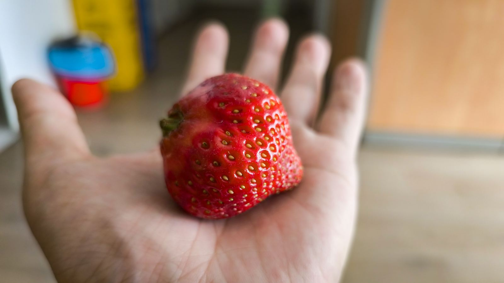
連續一週沒睡好，本以為是庇護所的打呼多重奏惹的禍，結果根本是高溫！西班牙晚上 10 點才日落，歐洲裝冷氣麻煩，庇護所幾乎沒冷氣也沒電扇。我的極限解法：直接睡冰涼地板，半夜冷醒再爬回床上，完美破解失眠。給準備踏上朝聖之路的各位一個建議：務必自備「夾式充電小風扇」。物理降溫才是王道，解決高溫痛點，確保你的睡眠品質。
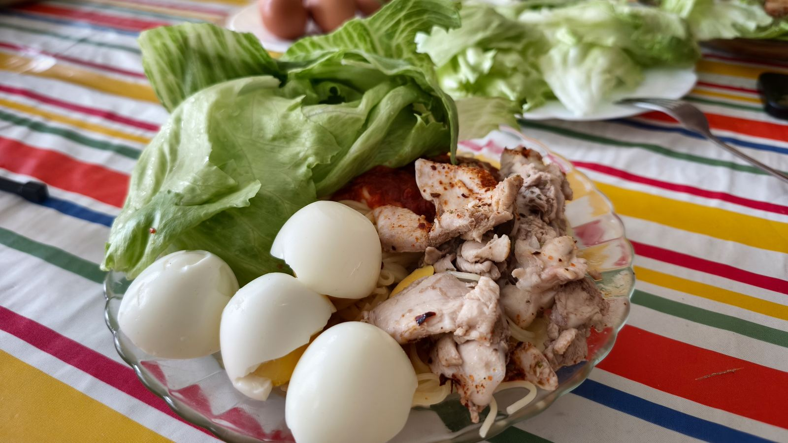
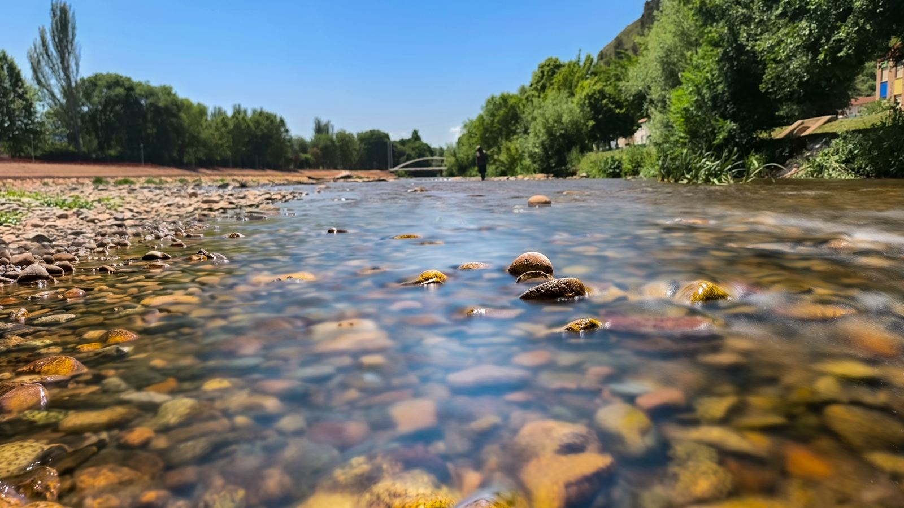
📚 朝聖者小百科：Nájera
Nájera（納赫拉） 建在紅色岩壁下，河流穿過鎮中心。最有名的是 聖瑪利亞皇家修道院（Monasterio de Santa María la Real）——傳說國王打獵時在洞穴中發現聖母像，因此在洞內建起教堂，內有歷代國王陵墓。
🍺 烈日下自由捐贈冰箱的冰啤酒是救命稻草
🐿️ 松鼠皮卡丘 · 🐂 奧斯本公牛 · ✝️ 樹枝十字架
🧊 溪流泡腳退燒，記得帶夾式小風扇抗高溫
🥾 約 29 km · 🏔️ Alto de la Grajera
☀️ Buen Camino 🙏🏻👣
| 自由捐贈冰箱冰啤酒 | €2.0 |
| 超市食材＋水果 | €7.0 |
| 庇護所 | €12.0 |
| 合計 | €21.0 |